Analysis of Discrete-Time Dynamical Systems - Math Modelling - Lecture 19 · visualizations
16 items · drag to pan · wheel to zoom · click thumbnail to jump
1:00 · A whiteboard shows three equations relating to delta X and X(n+1).2:40 · The whiteboard displays mathematical equations for delta X, X(n+1), G(x), and the conditions for equilibrium.3:00 · The whiteboard shows mathematical equations for equilibrium, including ΔX = F(x) and G(x) = X + F(x).
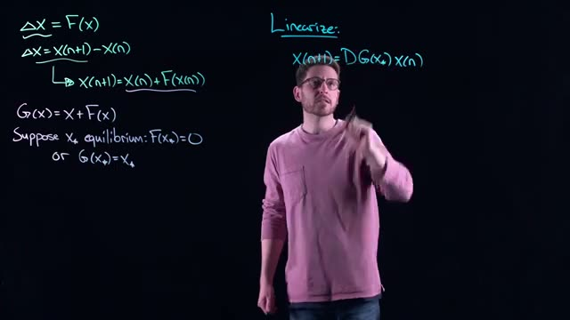
3:40 · A whiteboard shows mathematical equations for linearization, including definitions for ΔX, G(x), and an equilibrium condition.
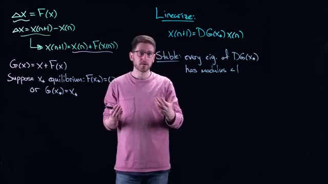
4:20 · This frame displays mathematical equations and definitions related to linearization and stability of systems, including expressions for ΔX, G(x), and conditions for stability.
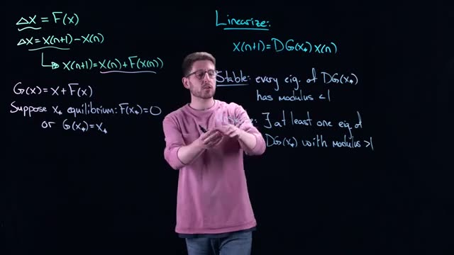
6:20 · The whiteboard displays equations for linearization, equilibrium, and conditions for stability and instability based on eigenvalues.
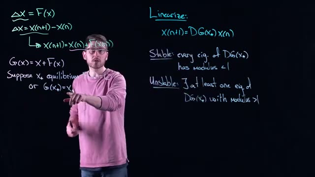
6:40 · This frame shows mathematical equations for linearizing a system, defining stable and unstable conditions based on the modulus of eigenvalues.
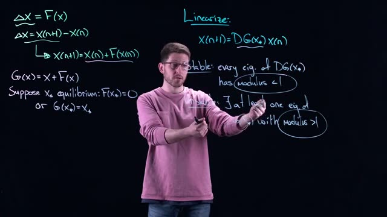
7:40 · The whiteboard shows equations for linearizing a system, defining equilibrium, and conditions for stability and instability based on the modulus of eigenvalues.1:00 · This visualization shows the derivation of a difference equation, which is fundamental for understanding discrete dynamical systems.
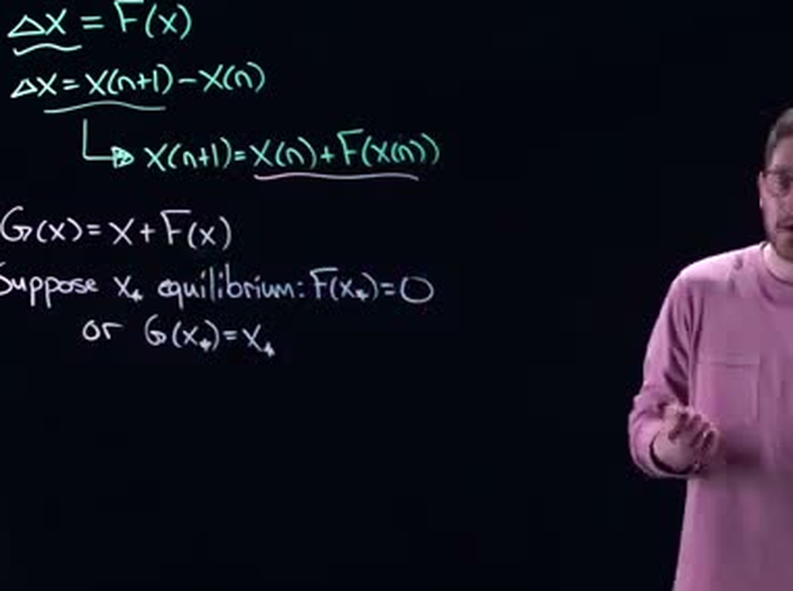
2:40 · This block of equations defines the relationship between the change in a variable (ΔX), its next state (X(n+1)), and a function F(x), and then introduces the concept of equilibrium where F(x*) = 0 or G(x*) = x*.
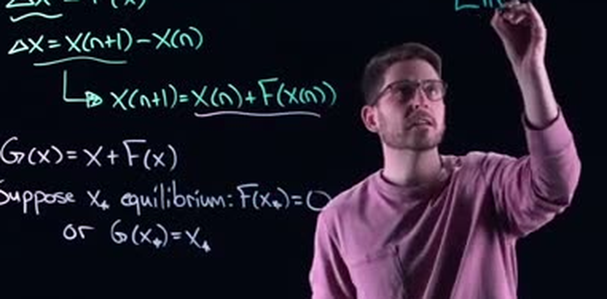
3:00 · This block of equations defines the change in a discrete dynamical system, introduces a function G(x), and states the conditions for an equilibrium point.
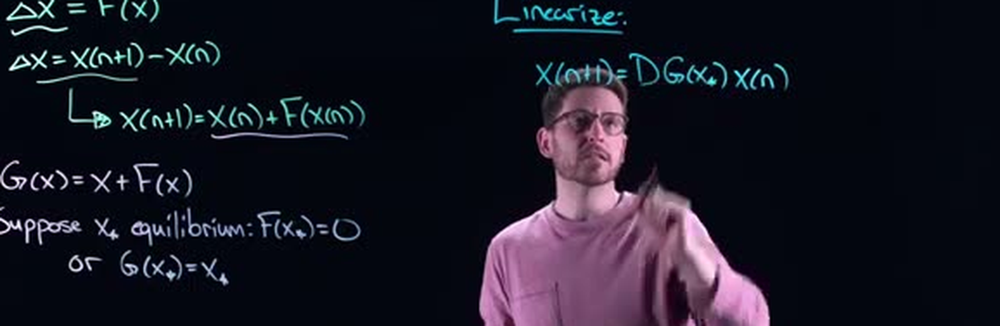
3:40 · This visualization presents a series of equations defining the change in X, an iterative update rule, a function G(x), and the conditions for equilibrium, which are fundamental concepts in dynamical systems.
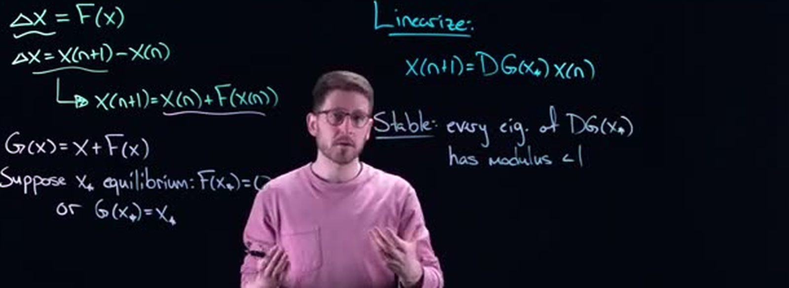
4:20 · This visualization presents the mathematical steps for linearizing a system and the condition for stability based on the eigenvalues of the linearized system's Jacobian matrix.
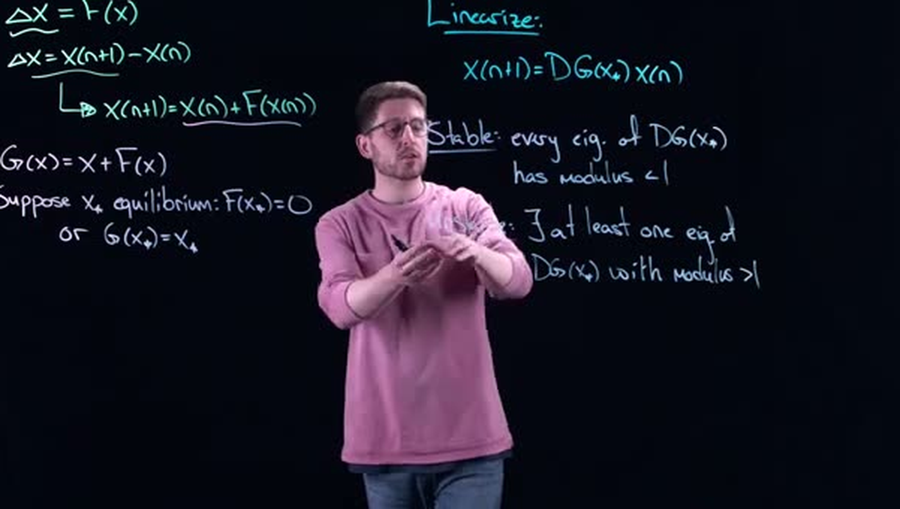
6:20 · This visualization presents the linearization of a discrete dynamical system and the conditions for stability and instability based on the eigenvalues of the linearized system's Jacobian matrix.6:40 · This visualization presents the linearization of a discrete dynamical system and defines the conditions for stable and unstable equilibrium points based on the eigenvalues of the linearized system's Jacobian matrix.
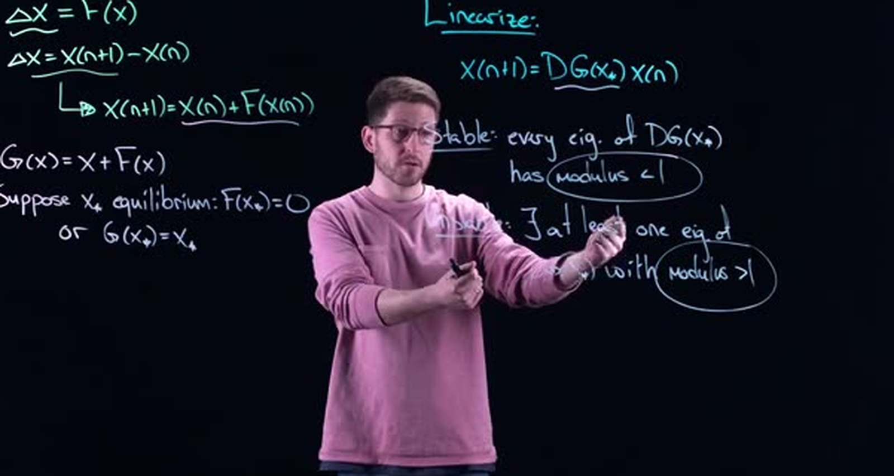
7:40 · This visualization presents the linearization of a discrete dynamical system and the conditions for stability and instability based on the modulus of eigenvalues.